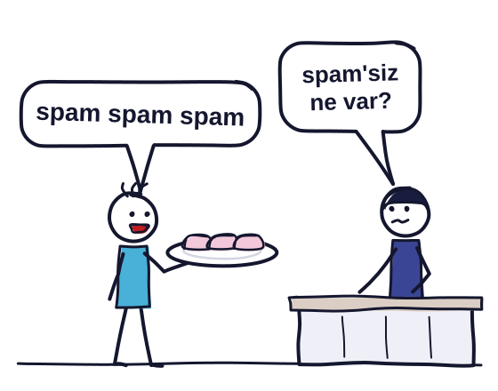
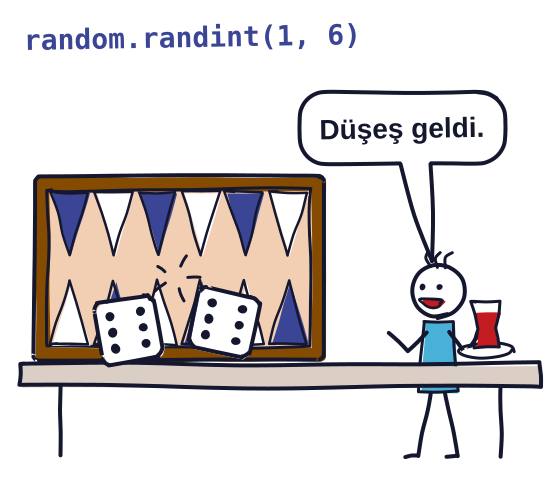

Bir dersi evde tekrar etmek ya da bir konuda daha derine inmek isterseniz buradan başlayabilirsiniz.
Videolar İngilizce ve isteğe bağlı. Her ders için önce bir video öneriyorum, altında birkaç ek video var.
Ders 1 · Ders 2 · Ders 3 · Ders 4 · Ders 5 · Python'dan ilerisi · Derinlemesine · Resmi belgeler · Ücretsiz kitaplar · Python dünyasından · Oynayarak öğren
Ders 1
Önce bunu izleyin
- CS50P - Lecture 0 - Functions, Variables
David Malan ilk programını yazıyor, hatasını bulup düzeltiyor ve
#ile comment ekliyor.
Daha fazlası
- CS50P - Lecture 0 - Functions, Variables
intvefloatile hesap yapıyor,/ile bölmenin neden hepfloatverdiğini gösteriyor. - Python Tutorial for Beginners 3: Integers and Floats - Working with Numeric Data
//ve%operator'larını ve işlem önceliğini anlatıyor. - CS50P - Lecture 3 - Exceptions
SyntaxErrorolan bir programın neden hiç çalışmadığını ve error message'ı nasıl okuyacağınızı gösteriyor.
Ders 2
Önce bunu izleyin
- CS50P - Lecture 0 - Functions, Variables
input()'tan gelen iki sayı+ile toplanmak yerine yan yana ekleniyor. David Malan bunuint()ile düzeltiyor, sonra f-string'i anlatıyor.
Daha fazlası
- Python Tutorial for Beginners 2: Strings - Working with Textual Data
lower()vereplace()gibi method'ların asıl str'yi değiştirmediğini, yeni bir str döndürdüğünü gösteriyor. - CS50P - Lecture 1 - Conditionals
Karşılaştırma operator'larıyla bir
ifveelifzinciri kuruyor, şartların sırasının neden önemli olduğunu gösteriyor. - Python Tutorial for Beginners 6: Conditionals and Booleans - If, Else, and Elif Statements
Corey Schafer şartları
and,orvenotile birleştiripifveelif'te kullanıyor.
Ders 3
Önce bunu izleyin
- CS50P - Lecture 2 - Loops
whileile bir counter kuruyor ve counter'ı güncellemeyi unutunca loop'un neden hiç bitmediğini gösteriyor.
Daha fazlası
- CS50P - Lecture 2 - Loops
forloop'unurange()ile kuruyor, sonra nested loops ile ekrana bir kare çiziyor. - Python Tutorial for Beginners 7: Loops and Iterations - For/While Loops
Corey Schafer
breakile loop'tan çıkmayı,continueile bir turu atlamayı gösteriyor. - Python Tutorial for Beginners 2: Strings - Working with Textual Data
Index'in 0'dan başladığını, slicing'de de bitiş index'inin dahil olmadığını gösteriyor.
Ders 4
Önce bunu izleyin
- Python Tutorial for Beginners 4: Lists, Tuples, and Sets
listmethod'larını anlattıktan sonra iki ismin aynılist'i nasıl paylaşabildiğini gösteriyor.
Daha fazlası
- CS50P - Lecture 3 - Exceptions
int(input())satırında çıkanValueError'ıtryveexceptile yakalıyor. - CS50P - Lecture 4 - Libraries
import randomilerandom.randint()'i kullanıyor,from ... importyazımını da gösteriyor. - PY4E - Functions (Chapter 4 Part 2)
Dr. Chuck
defile bir function tanımlayıp çağırıyor, sonra parameter ile argument arasındaki farkı ve return value'yu anlatıyor.
Ders 5
Önce bunu izleyin
- PY4E - Dictionaries (Chapter 9 Part 2)
Dr. Chuck bir
dictile sayım yapıyor, olmayan bir key'de çıkanKeyError'ı daget()ile önlüyor.
Daha fazlası
- Python Tutorial for Beginners 4: Lists, Tuples, and Sets
set'in aynı değeri iki kez tutmadığını gösteriyor, sonra ikiset'in kesişimini ve birleşimini alıyor. - CS50P - Lecture 6 - File I/O
with open()ile bir file'ı satır satır okuyor ve satır sonundaki\n'i atıyor. - CS50P - Lecture 6 - File I/O
"w"ile açılan file'ın baştan yazıldığını,"a"ile açılanın sonuna eklendiğini gösteriyor.
Python'dan ilerisi
Ders 5'in sonunda baktığımız altı kapının her biri için bir ilk adım öneriyorum.
- Veri ve bilim
Ders 5'teki AGNO grafiğini matplotlib çizmişti. Başlangıç sayfası kurulumdan ilk grafiğinize kadar götürüyor.
- Web
Flask'ın hızlı başlangıç sayfası, tarayıcıda Hello, World yazan beş satırlık bir uygulamayla açılıyor.
- Otomasyon
Ders 5'te her ders için ayrı bir dosya yazdırmıştık. Al Sweigart'ın ücretsiz kitabı, dosyaları yeniden adlandırmak gibi sıkıcı işleri Python'a yaptırmayı anlatıyor.
- Donanım
Bu proje Raspberry Pi Pico kartını bilgisayara bağlayıp MicroPython ile kartın üstündeki LED'i yakıp söndürmeyi adım adım gösteriyor.
- Oyun
pygame'in giriş yazısı, pencerenin kenarlarından seken bir topun programını satır satır anlatıyor.
- Yapay zeka
Andrew Ng'nin kısa dersi, bu kursta gördüklerinizin üstüne Python'dan bir yapay zeka modelini çağırmayı ekliyor. Kayıt ücretsiz, notlu ödevler ve sertifika ücretli üyelik istiyor.
Derinlemesine
- The Story of Python and how it took over the world | Python: The Documentary
Guido van Rossum ve çekirdek geliştiriciler Python'un hikayesini kendileri anlatıyor.
- Von Neumann Architecture - Computerphile
Derste çizdiğimiz bilgisayar modelini, yani code ile data'nın aynı memory'de durmasını anlatıyor.
- Floating Point Numbers - Computerphile
0.1 + 0.2işleminin neden tam0.3vermediğini anlatıyor. - Ned Batchelder - Facts and Myths about Python names and values - PyCon 2015
Ned Batchelder variable'ların değerlere bağlanan birer isim olduğunu, bir ismi yeniden atamanın ötekini değiştirmediğini anlatıyor.
- Characters, Symbols and the Unicode Miracle - Computerphile
ş ve ğ gibi harflerin neden bazen bozuk göründüğünü anlatıyor.
- Halting Problem in Python - Computerphile
Her programın bitip bitmeyeceğini önceden söyleyen genel bir program yazılamayacağını Python ile gösteriyor.
- Ned Batchelder - Facts and Myths about Python names and values - PyCon 2015
Ned Batchelder
b = asatırının bir kopya yapmadığını, bu yüzdenb.append()'ina'yı da değiştirdiğini gösteriyor. - Barbara Liskov, 2008 ACM A.M. Turing Award Lecture "The Power of Abstraction"
Barbara Liskov,
tryveexcept'in dayandığı exception modelini CLU'yu tasarlarken neden seçtiklerini anlatıyor. - Lecture 7: Decomposition, Abstraction, and Functions
MIT'den Ana Bell, bir function çağrılınca yeni bir scope açıldığını adım adım gösteriyor.
- Python Hash Sets Explained & Demonstrated - Computerphile
setvedict'in neden bu kadar hızlı olduğunu Python ile sıfırdan yazarak gösteriyor.
Üniversite dersleri
- CS50's Introduction to Programming with Python
Bu sayfadaki CS50P videoları bu dersten. Notlarına ve problem setlerine de ücretsiz ulaşabilirsiniz.
- Introduction to CS and Programming using Python (6.100L)
MIT'nin programlamaya giriş dersi, kayıtları ve alıştırmaları herkese açık.
Resmi belgeler
- The Python Tutorial
Derslerimizle en çok örtüşen bölümler 3'ten 8'e kadar.
- Python Öğreticisi
Aynı öğreticinin Türkçe çevirisi, yalnızca bazı alt bölümleri İngilizce kalmış.
Her dersle ilgili sayfalar
- Ders 1 An Informal Introduction to Python, Syntax Errors, print(), type(), Floating-Point Arithmetic
- Ders 2 Text, input(), Formatted String Literals, String Methods, Boolean Operations, if Statements
- Ders 3 First Steps Towards Programming, for Statements, The range() Function, break and continue, Common Sequence Operations
- Ders 4 Lists, Tuples and Sequences, Handling Exceptions, Modules, random, Defining Functions
- Ders 5 Local and global variables, None, Dictionaries, Sets, Reading and Writing Files
Ücretsiz kitaplar
Üçü de hiç program yazmamış okur için yazılmış ve internette ücretsiz.
- Automate the Boring Stuff with Python
Kurstan sonra bilgisayardaki sıkıcı işleri Python'a yaptırmak isterseniz bu kitapla devam edebilirsiniz. Lisansı CC BY-NC-SA 3.0.
- Think Python
Kitabın her bölümü, kodunu çalıştırabileceğiniz bir notebook. Lisansı CC BY-NC-SA 4.0.
- Python for Everybody
Bu sayfadaki Dr. Chuck videoları bu kitabın bölümlerini anlatıyor. Lisansı CC BY-NC-SA 3.0.
Python dünyasından
Python'la ilgili sevdiğim kısa hikayeleri kaynaklarıyla birlikte aşağıya koydum.

spam ve eggs, Monty Python'un 1970'te yayımlanan lokanta skecinden gelir.- Adı bir komedi dizisinden
Python adını yılandan değil, BBC'nin komedi dizisi Monty Python's Flying Circus'tan aldı.
- Bir Noel tatili projesi
Guido van Rossum Python'a Aralık 1989'da, Noel tatilinde hobi projesi olarak başladı.
- IDLE ve Eric Idle
Guido'ya göre Python'la gelen IDLE editörünün adı aslında Monty Python'un Eric Idle'ından gelir.
import thisimport thisyazınca Python, Tim Peters'ın yazdığı 19 ilkeyi, yani The Zen of Python'u ekrana yazar.import antigravityimport antigravityyazınca Python, tarayıcıda xkcd 353 çizgi romanını açar.from __future__ import bracesBu satırla süslü parantezli block isteyene Python
SyntaxError: not a chancediye cevap verir.- Hatanın altındaki
^^^Hatanın yerini gösteren
^^^işaretleri Python 3.11'le geldi. Bunu getiren PEP 657'nin yazarlarından biri Batuhan Taşkaya. - Kütleçekim dalgaları ve kara delik
Kütleçekim dalgalarının keşfinde ve ilk kara delik görüntüsünde Python ve NumPy kullanıldı.
- AlphaFold
Proteinlerin şeklini tahmin eden AlphaFold'un makalesinde Python ve NumPy kullandıkları yazıyor.
- Bir milyon satır Python
Dropbox'ın masaüstü uygulamasında 2019'da bir milyondan fazla satır Python vardı.
- Rubber duck debugging
Kodunu satır satır bir lastik ördeğe anlatan programcı, hatayı çoğu zaman anlatırken bulur.
Derste anlattığımız tarih hikayelerini Tarihçe sayfasında okuyabilirsiniz.
Oynayarak öğren
Aşağıdaki oyunları, yanlarında yazan derse kadar gördüklerimizle yazabilirsiniz.
- Sayı tutma hilesi
Bir sayı tutun, iki katına 10 ekleyin, yarıya bölüp tuttuğunuz sayıyı çıkarın. Sonuç hep 5.0 çıkar.
- Dört tane 4
Yalnızca dört tane 4 ve aritmetik operator'larla 0'dan 10'a kadar her sayıyı yazabilirsiniz.
- Kuş dili
replace()ile her sesli harfin ardına g ve aynı harfi ekleyin. Örneğin merhaba, megerhagabaga olur. - Haftanın günü
Doğduğunuz gün haftanın hangi günüydü? Bunu Zeller'in 1882 formülü ve bir
elifzinciriyle hesaplayabilirsiniz. - İki kişilik sayı tahmin oyunu
Biri gizli sayıyı yazar, öbürü bulana kadar tahmin eder. Bunun için
whileve bir counter yeterli. - Yıldızdan elmas
Yıldızlardan bir üçgen yazdırıp altına ters çevrilmiş halini eklerseniz bir elmas çıkar. Geri sayan bir
range()ile"*" * nişinizi görür.

random.randint(1, 6) bir tavla zarı gibi, her çağrıda 1 ile 6 arasında bir sayı verir. Taş, kağıt, makas oyununda bilgisayarın hamlesini de böyle seçeceksiniz.- XOX
Tahtayı dokuz elemanlı bir
list, kazandıran sekiz çizgiyi detuple'lardan oluşan birlistolarak tutabilirsiniz. - Taş, kağıt, makas
Bilgisayarın hamlesini
randomseçer, kazananı da sizin yazacağınızwinner()function'ı bulur. - Kampüs macerası
Harita
map.txtdosyasında durur ve oyun onu birdict'e okur. Çantanız da birset. - Python'un yazdığı web sayfası
write()ile birreport.htmldosyası yazarsanız not raporunuzu tarayıcıda bir web sayfası olarak açabilirsiniz.
Python Tutor
Python Tutor kodunuzu satır satır çalıştırıp her ismin hangi object'i gösterdiğini çiziyor.
Başka kaynaklardaki terimler
Başka Türkçe kaynaklar operator'a işleç, statement'a deyim, condition'a koşul, exception'a da istisna diyor.